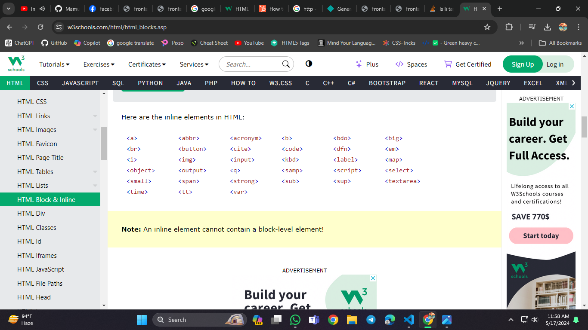

A block-level element always starts on a new line, and the browsers automatically add some space (a margin) before and after the element. A block-level element always takes up the full width available (stretches out to the left and right as far as it can). Two commonly used block elements are:
and
element defines a paragraph in an HTML document. The
An inline element does not start on a new line. An inline element only takes up as much width as necessary. This is a element inside a paragraph.
